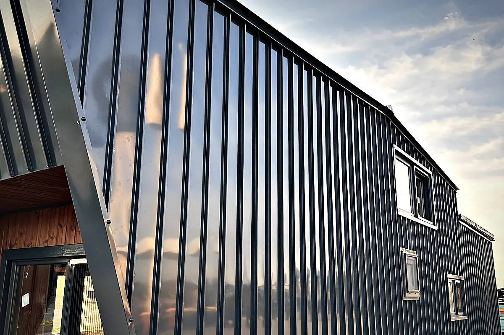

Tiny house on the North Sea coast
The North Sea is the rougher of Germany's two coasts: westerly wind without pause, storm-surge zones behind the dyke, islands reachable only by ferry. A tiny house here is either built for that wind or, after two winters, no longer what was delivered. And on the islands every delivery is a logistics question before it is a building question.
On the North Sea, facade, fittings and glazing are chosen for constant westerly wind and salt air; placement accounts for wind load and position relative to the dyke. For the islands the ferry logistics are settled before the model. Whether a site lies in a flood or storm-surge zone and what is permitted there is for the operator to settle with the authority — the state pages name the official source.
Wind as a permanent condition
On the North Sea wind is not weather but a condition. That demands more of a unit than the Baltic does: a facade whose joints withstand driving rain, fittings that tolerate salt, glazing suited to the climate, and a placement where wind load and anchoring of the supports are settled before the first storm. The reasoning for the components is on the quality page; the decision is made per site.
Dyke foreland, storm surge and the question for the authority
Land behind the dyke and on the Halligen and islands often lies in areas with special rules — flood zones, storm-surge zones, national park. Whether a unit may stand there, for how long and in what form is a question for the authority and the owner of the land, not for the manufacturer. We supply the technical information on the house for that clarification.
Islands: the ferry before the model
For Sylt, Föhr, Amrum, Pellworm, the East Frisian Islands and Heligoland every delivery is first a ferry question: which ferry takes which length and weight, on which date, with what access at the harbour. That is settled before the model is chosen, because it can limit the choice. The way from production is by road, with a Ro-Ro or ferry leg depending on the route — for the islands the island ferry is added.
What applies under planning law is on the state page, with the official source:
Who typically plans here
Campsite & glamping
Rental units that fit the site rules and arrive outside the season.
Units in seriesHoliday park & resort
Identical units in series, calculated against operator rules and running costs.
Overnight stays by the waterMarina & coast
Overnight units by the water, specified for salt, wind and damp.
196 places in the North Sea coast region
Assigned geographically by coordinates and state — an orientation, not an official boundary. The town pages are in German.